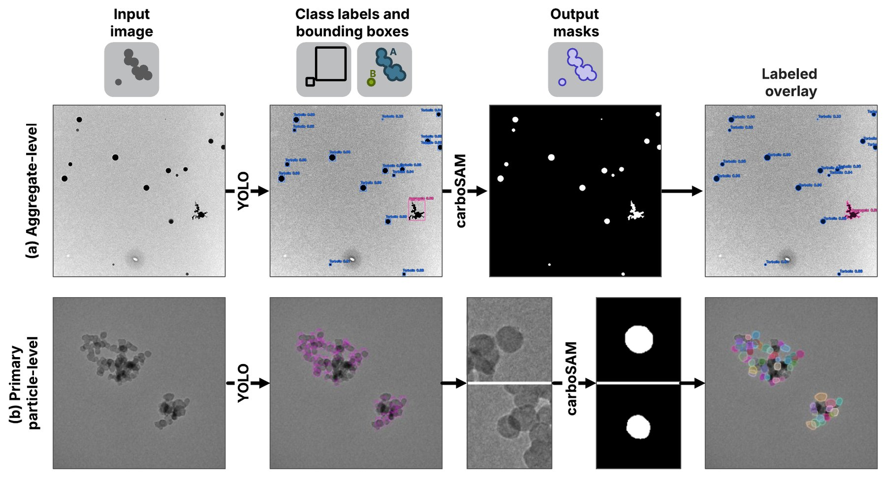
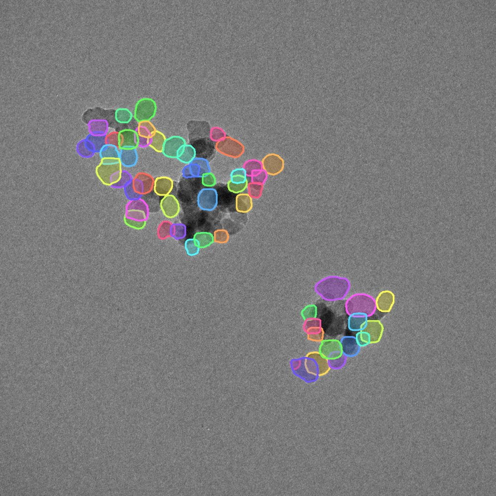
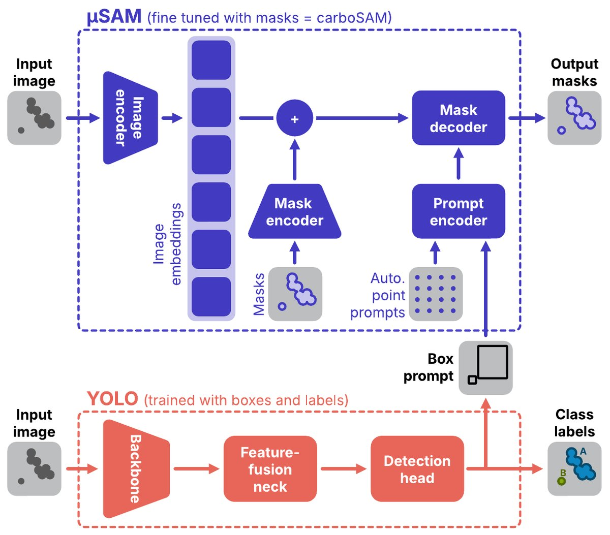
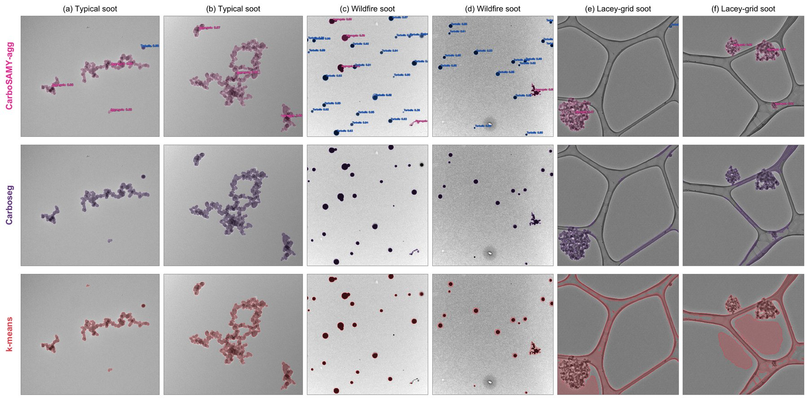
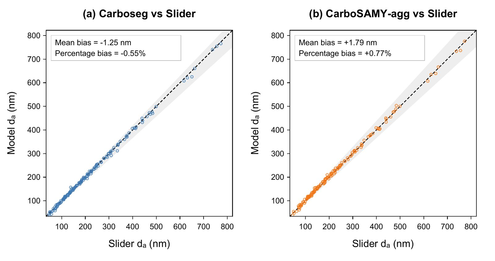
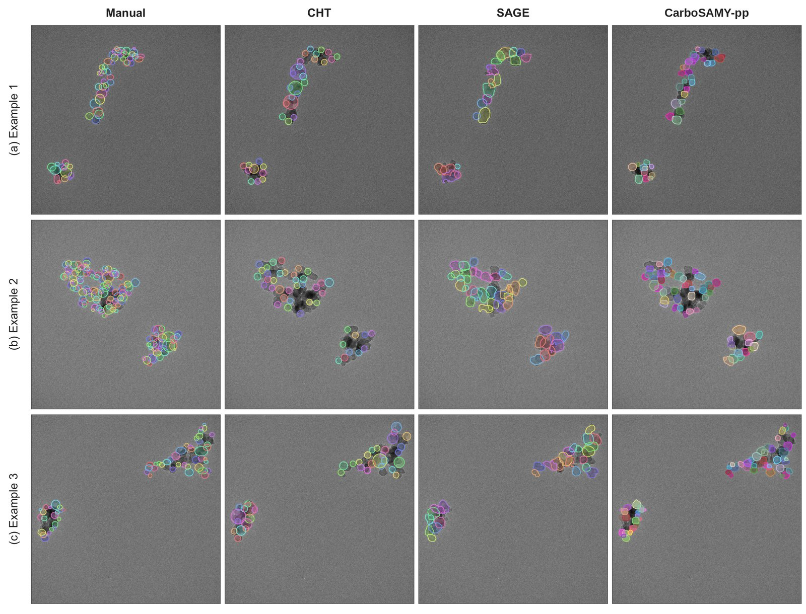

CarboSAMY
Automated deep-learning segmentation of soot in TEM images
- Year
- 2026
- Context
- UBC Energy & Aerosol Laboratory
- Tools
- Python · Deep learning · Image processing · TEM







A deep-learning workflow that finds, segments, and measures soot and other carbonaceous particles in electron-microscope images, reducing analysis time by 99.6%.
Why
Transmission electron microscopy (TEM) is the standard way to see the structure of soot aggregates, but measuring them means hand-tracing particles image by image. That slow, subjective step limits how much data a study can use.
What I built
CarboSAMY is an end-to-end workflow that detects particles, segments them, and extracts morphology metrics automatically. It uses two models: CarboSAM-seg for segmentation and CarboSAM-pp for post-processing. Compared with manual analysis it cuts analysis time by 99.6%.
Validation
I coordinated a small annotation team producing manually segmented images as validation data, reviewing consistency, particle identification, and mask quality.
Status
Manuscript submitted. Results were presented as a poster at the Canadian Aerosol Conference (2026), and a poster has been accepted for the ASME IMECE 2026 Undergraduate Research and Design Expo in Vancouver.